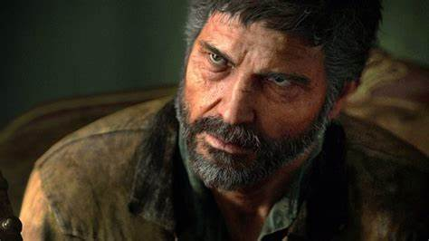

Ellie
Ellie Williams é uma personagem fictícia da franquia de jogos eletrônicos The Last of Us, da Naughty Dog. No primeiro jogo, o personagem Joel é encarregado de acompanhar Ellie em um Estados Unidos pós-apocalíptico, na tentativa de criar uma cura potencial para uma infecção à qual Ellie é imune.
Jhow
Ellie jurou vingança e perseguiu Abby até Seattle . Seus esforços foram infrutíferos, levando-a a se aposentar em uma fazenda com sua namorada Dina e seu filho JJ.
James
Ela pergunta a Ellie o que eles queriam com ela, e Ellie dá a entender que pretendiam roubar seus pertences. Ela dispensa a menina quando ela tenta dar conselhos sobre como funcionar na zona de quarentena, perguntando se ela parecia ou não que precisava de ajuda.